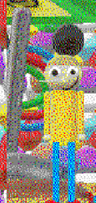

"Robotical Broomstick" (or just "RB") would have been the Gotta Sweep replacement in the unfinished Baldi's Basics mod known as "Kadens Fun House Of Objects!"(/"KFHOO").
Aliases
Robotical Broomstick, RB, Robo Broom.
Appearance
Robotical Broomstick appears as a shiny metal broom, it has a gray handle and head, brown bristles, and three wires coming out of it's side; one green, one blue, and one red.
Gallery

Trivia
Robotical Broomstick isn't very human-like, unlike Robo Kaden.
Robotical Broomstick does it's job of cleaning well.
Robotical Broomstick gets along well with everyone, purely because of it's usefulness.